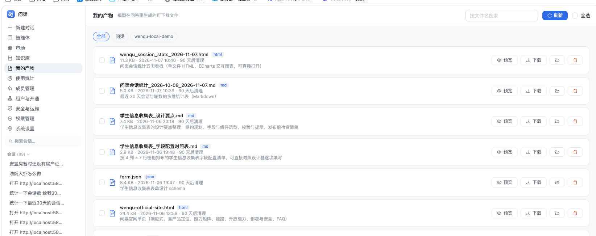

「我的产物」
功能 / UI / UX 升级方案
当前页面已经能完成「看、下、删」，但产物一多就会退化成一条需要反复滚动的时间线。 这次升级围绕四件事展开：找得到、看得清、管得动、心里有数，并保持现有的设计语言与安全口径不变。
现状诊断：能用，但不够好用
以当前线上页面为基准（下方为实际截图）。页面骨架是清晰的：页头搜索、工作区筛选、单列产物卡片、预览/下载/移动/删除。 问题不在「缺功能」，而在信息密度、查找效率与批量能力没有跟上产物数量的增长。

查找手段单一
只有文件名搜索与工作区筛选。产物一多，找一份「上周的表格」只能靠滚动；没有类型、时间范围与排序。
类型辨识度低
所有文件共用同一个文档图标，类型只有一个小 chip。网页、Markdown、JSON、图片在列表里看起来几乎一样，也没有图片缩略图。
批量能力残缺
勾选后只能「删除选中」。没有批量下载、批量移动；选中后也看不到已选总大小，无法判断操作影响。
缺少上下文与可读名
看不出产物来自哪次对话，想回原对话核对只能自己回忆；文件名由模型生成，常常是拼音、时间戳或内部代号，不好认。
缺少全局概览
不知道一共有多少份、占了多少空间、哪些快到期。清理只能靠每条右边的「90 天后清理」逐条看。
状态与移动端体验不足
加载、空态、错误都只有一行文字；手机上操作区整组换行后偏挤，批量操作没有固定入口。
设计目标与原则
找到一份产物
搜索 + 类型 + 时间 + 工作区，四个入口互相独立又能组合；搜索支持文件名、显示名与说明。
批量管好一批产物
进入选择模式 → 下载 ZIP / 移动到工作区 / 删除。选中即显示数量与总大小，破坏性操作二次确认。
看清存储与到期
四条概览指标常驻页头下方；「即将清理」可点，直接筛出需要处理的产物。
四条设计原则
批量栏只在选择模式出现；筛选默认「全部」，不让用户先做选择题。
同一套色板、圆角、字号与页头结构；新组件不引入第二套视觉体系。
重命名只改显示名，不改 filename / objectKey；移动只改归属，不动磁盘文件。下载地址与安全口径保持不变。
删除、批量删除均二次确认并说明「不可恢复」；批量操作只作用于当前筛选结果，不跨筛选误删。
页面结构：在现有骨架上加三层
页面从「页头 → 列表」两层，扩展为「页头 → 概览 → 筛选 → 内容 → 批量栏」五层。 每一层都有明确职责，不与相邻层混用同一种控件。
应用外壳
侧栏 · 未改动「我的产物」仍是侧栏入口，命中的是同一个路由 /artifacts。
每行：勾选 · 类型图标 · 显示名 · 说明 · 元信息 · 来源会话 · 操作
| 区域 | 职责 | 关键控件 | 出现条件 |
|---|---|---|---|
| ① 页头 | 定位与检索入口 | 搜索框（支持 / 聚焦）、视图切换、刷新 | 常驻 |
| ② 概览条 | 回答「我有多少、占多大、要清理什么」 | 4 个指标；「即将清理」可点 | 常驻；统计失败时隐藏单项 |
| ③ 筛选区 | 缩小结果集 | 工作区 chips、类型 chips、时间下拉、排序下拉 | 常驻；产物为 0 时可折叠 |
| ④ 内容区 | 浏览与操作 | 列表 / 网格、分组头、行/卡片、空态 | 常驻 |
| ⑤ 批量栏 | 批量动作与影响提示 | 已选计数与总大小、下载、移动、删除 | 仅选择模式且有选中项 |
效果图
下列为高保真静态稿，按真实应用的 1120px 内容宽度绘制，配色直接取自现有 app.css 的设计令牌。 所有效果图均可直接作为前端实现基准。
4.1 默认列表视图
页头保持不变；概览条与筛选区插在列表之上。类型色、来源会话、重命名后的显示名是第一眼能看到的三个新信息。
我的产物
模型在回答里生成的可下载文件4.2 网格视图
面向「找图、找网页、快速浏览」。图片使用真实缩略图，网页/表格/代码使用类型化的迷你示意块，避免为每张卡片拉取正文造成性能问题。
我的产物
模型在回答里生成的可下载文件4.3 选择模式与批量操作
进入选择模式后：行点击 = 勾选，预览按钮保留；底部出现固定批量栏。切换筛选、搜索或排序会自动退出选择模式，避免跨结果集误删。
我的产物
已选 3 项4.4 更多操作与行内重命名
桌面端每行保留「预览 + 下载」两个高频动作，低频动作收进「更多」菜单：重命名、移动到工作区、复制链接、删除。重命名只改显示名，扩展名固定显示、不可编辑。
我的产物
模型在回答里生成的可下载文件4.5 移动端
手机端保持列表形态（卡片天然适合竖排），操作收进「更多」；批量模式底部固定栏，触摸热区不小于 44px。统计条与筛选 chips 横向滚动，不换行挤压。
我的产物
已选 3 项
4.6 加载 / 空态 / 错误
三种状态都必须「说清发生了什么、下一步做什么」。加载用骨架而不是空白；空态区分「没有产物」「筛选无结果」「在别的电脑的工作区」；错误在页内给出重试入口。
没有匹配的产物
试试更短的关键词，或清除类型/时间筛选
产物列表加载失败
网络请求没有成功，已保留上一次结果
4.7 空产物页的首屏
没有任何产物时，不应该只留一句「还没有产物」。给出一条最短的生成路径，让用户知道下一步做什么。
我的产物
模型在回答里生成的可下载文件还没有产物
在对话里让 AI 把结果整理成一份清单、表格或网页，生成的文件会自动出现在这里。
功能清单
按四组能力拆分，每项都给出可验收的行为描述。P0 为本次必须交付，P1 为同一轮可顺带完成的增强。
| 能力组 | 功能 | 行为定义 | 优先级 |
|---|---|---|---|
| 筛选与排序 | 关键词搜索 | 匹配显示名、原文件名与说明；输入 300ms 防抖；清空立即恢复全量 | P0 |
| 类型筛选 | 全部 / 网页 / 文档 / 表格 / 图片 / 代码 / 压缩包 / 其他；单选，带颜色圆点 | P0 | |
| 时间筛选 | 全部 / 近 7 天 / 近 30 天 / 近 90 天 / 本月 | P0 | |
| 工作区筛选 | 沿用现有 chips（只列这台电脑上的工作区），保留「全部」 | P0 | |
| 排序 | 最新优先（默认）/ 最早优先 / 从大到小 / 从小到大 / 名称 A→Z | P0 | |
| 即将清理筛选 | 一键只看 7 天内将被清理的产物；与概览条数字联动 | P0 | |
| 筛选状态持久化 | 视图模式、排序写入 localStorage；筛选条件写入 URL query，刷新/后退可恢复 | P1 | |
| 统计概览 | 全部产物 | 当前账号未删除产物总数 | P0 |
| 占用空间 | SUM(size)，自动换算 B / KB / MB / GB | P0 | |
| 7 天内清理 | 按全局保留天数计算；为 0 时显示灰色「—」 | P0 | |
| 本月新增 | 本月 1 日 00:00 之后创建的产物数；点击切到「本月」时间筛选 | P1 | |
| 批量操作 | 选择模式 | 点「选择」进入；行点击 = 勾选；「预览」仍独立可点；Esc / 取消退出并清空 | P0 |
| 全选当前结果 | 只选当前筛选结果，不跨筛选；已选计数与总大小实时更新 | P0 | |
| 批量下载 | 1 个直接下载；≥2 个打包 ZIP（单次上限 50 个 / 100MB），同名自动去重 | P0 | |
| 批量移动 | 复用「移动到工作区」弹窗；提示将一起移动 N 个；只改归属不搬文件 | P0 | |
| 批量删除 | 二次确认列出数量与总大小，说明不可恢复；结果提示成功/跳过条数 | P0 | |
| 扁平批量栏 | 桌面端固定在内容区底部；移动端固定在屏幕底部，热区 ≥44px | P0 | |
| 来源会话与重命名 | 来源会话 | 每行显示「来源：会话标题」，点击跳转 /chat?sid=…；标题超长截断 | P0 |
| 会话已删除 | 显示灰色「来源会话已删除」，不可点击；无会话则不显示 | P0 | |
| 重命名 | 更多菜单或双击名称进入行内编辑；1–60 字符；只改显示名 | P0 | |
| 恢复原名 | 留空保存 = 清空显示名，恢复原文件名 | P0 | |
| 原名对照 | 显示名与原文件名不同时，meta 行以灰字显示原文件名，避免「这是哪个文件」的困惑 | P0 | |
| 复制链接 | 「更多」里提供复制下载链接；复用现有签名地址，过期后提示刷新 | P1 | |
| 体验完善 | 类型视觉 | 7 类图标 + 淡色底 + 类型色；类型 chip 与图标颜色一致 | P0 |
| 图片缩略图 | 网格视图对图片直接使用签名地址做缩略图；加载失败回退类型图标 | P1 | |
| 列表 / 网格切换 | 页头分段控件；列表按工作区分组，网格平铺并显示工作区徽标 | P0 | |
| 行悬停 | 悬停显示边框强调与操作按钮；键盘聚焦态同款 | P0 | |
| 加载骨架 | 首次加载与筛选切换均显示 ≥3 行骨架，避免空白闪烁 | P0 | |
| 空态 / 错误态 | 三种空态（无产物、筛选无结果、别的电脑工作区）；错误页内重试 | P0 | |
| 键盘可达 | / 聚焦搜索；Esc 退出选择或清空搜索；Tab 焦点环可见 | P1 | |
| 无障碍标签 | 所有图标按钮有 aria-label；行勾选框有关联文本；颜色不作为唯一信息载体 | P0 |
交互规则与边界
这些规则决定「看起来一样」的功能是否真的可预期。实现时按此表逐条对照，避免出现同一操作在不同入口表现不同。
| 场景 | 规则 | 为什么 |
|---|---|---|
| 筛选组合 | 工作区、类型、时间、关键词为「与」关系；排序不改变结果集 | 组合筛选是用户心智模型，不能出现「选了 A 又选 B 结果变多」 |
| 搜索 | 300ms 防抖；匹配显示名、原文件名、说明；空串立即恢复 | 产物说明里常有关键词，只搜文件名会漏掉一半 |
| 选择模式 | 进入后行点击 = 勾选；「预览」按钮独立于行点击；切换筛选/搜索/排序自动退出并清空 | 避免选中的项被筛掉后仍被删除，造成「看不到却被删」 |
| 全选 | 只选当前筛选结果；全选后新增的产物不会被自动勾选 | 「全选」的语义是「全选我现在看到的」 |
| 批量下载 | 1 个直接下载；≥2 个打包 ZIP；单次 ≤50 个且总大小 ≤100MB；同名自动加序号 | 浏览器逐个下载会被拦截，打包是一次动作的确定性结果 |
| 重命名 | 只改显示名；1–60 字符；去掉控制字符；空白 = 恢复原名；扩展名不可编辑 | 改文件名会牵动 objectKey 与已分享链接，风险远大于收益 |
| 来源会话 | 显示标题截断到 24 字符；点击跳 /chat?sid=…；会话已删除则灰色不可点 | 给用户一条能回到上下文的确定路径，同时不制造死链接 |
| 统计口径 | 概览为账号全局口径，不随筛选变化；结果行单独显示「当前筛选 X 个 · Y」 | 概览是「我总共有多少」，筛选是「我现在看到多少」，两者混在一起会互相误导 |
| 到期计算 | 沿用 cleanup.assetRetentionDays；≤0 表示永不清理，显示「永久保留」 | 与清理任务同源，避免「写着 30 天实际昨天就删了」 |
| 删除 | 单条与批量均 Modal 二次确认；说明删除文件且不可恢复；结果区分成功与被跳过 | 删除是本页唯一不可逆动作，确认信息必须包含影响范围 |
| 移动工作区 | 复用现有弹窗；批量时标题与说明带数量；只改归属，不移动磁盘文件 | 与现有会话移动行为保持一致，不制造第二套语义 |
| 刷新 | 保留当前筛选与排序；清空选择；重新拉取列表与统计 | 刷新不应把用户好不容易筛出的结果重置 |
| 错误 | 列表失败保留上一次结果并在顶部条提示；统计失败仅隐藏统计；下载失败给可重试提示 | 列表与统计不是同一条命，不能一起白屏 |
技术方案
原则：不新建表、不改存储结构。只在 c_ai_artifact 增加一个显示名列，其余能力通过查询参数与新增接口完成； 现有 list / delete / move / content / refresh-sign 全部保持兼容。
7.1 数据模型
新增一个可空列，只影响展示，不影响文件名、objectKey、下载地址与已分享链接。
| 变更 | DDL | 说明 |
|---|---|---|
| 新增列 | ALTER TABLE c_ai_artifact ADD COLUMN display_name VARCHAR(120) DEFAULT NULL COMMENT '用户重命名后的显示名（不改 filename/object_key）'; | NULL = 未重命名，列表回退 filename；写入时 trim、去控制字符、限长 60 |
schema.sql 的建表定义里补上该列。新装库随建表语句生效；
存量库由本工程已有的 SchemaMigrator 在启动时比对 information_schema 自动补列
（幂等、先查后补），不需要手写 ALTER，也不阻塞启动。
7.2 后端接口
| 方法 | 路径 | 入参 | 返回 / 行为 |
|---|---|---|---|
| GET | /artifact/list | keyword, projectId, kind, timeRange, expiring, sort | 现有结构 + displayName / kind / sessionTitle / sessionExists；排序白名单校验 |
| GET | /artifact/stats | 无（按 uid） | {count,totalSize,expiring7,expiring30,monthAdded,byKind}；单条聚合查询 |
| PUT | /artifact/{id}/name | {displayName} | 仅改 display_name；空串/空白 = 置 NULL；长度 ≤60 |
| PUT | /artifact/project-batch | {ids, projectId} | {moved,skipped}；逐条复用 moveProject 的归属校验 |
| POST | /artifact/batch-download | {ids} | application/zip 流式响应；单次 ≤50 个 / ≤100MB；同名去重 |
现有 GET /artifact/{id}/content、DELETE /artifact/{id}、POST /artifact/batch-delete、POST /artifact/refresh-sign 保持不变。
7.3 后端实现要点
- 类型映射单一来源：在
PreviewTypes（或新建ArtifactKinds）维护扩展名 → kind 的映射，DTO 直接下发 kind；前端只做兜底，不再抄一张清单。 - 来源会话标题批量取：列表查出 sessionId 去重后一次
selectBatchIds，避免逐行查会话造成 N+1；会话不存在则 sessionExists=false。 - 统计一条 SQL：COUNT / SUM(size) / 本月新增 / 到期区间可用一条聚合或两条条件聚合；到期区间由保留天数换算，与
cleanupExpired同源。 - ZIP 流式输出：用 JDK
ZipOutputStream逐个写文件，不把 100MB 读进内存；entry 名取显示名 + 原扩展名，同名追加(1)；写前按 objectKey 规范化并确认仍在产物根目录内。 - 批量移动：复用
artifactService.moveProject的归属校验，逐条记录 moved/skipped；不新增 SQL。 - 排序白名单：只接受 time_desc / time_asc / size_desc / size_asc / name_asc 五个枚举，拒绝把前端字符串拼进 ORDER BY。
- 搜索范围：
filename like ? OR display_name like ? OR description like ?，沿用现有 LIKE 口径，转义通配符。
7.4 前端结构
页面与组件
ArtifactsPage.vue（编排）├─ ArtifactFilterBar.vue
├─ ArtifactListItem.vue
├─ ArtifactGridCard.vue
├─ ArtifactBulkBar.vue
├─ ArtifactTypeIcon.vue
└─ MoveToWorkspaceModal.vue（复用）
状态与工具
ArtifactsPage.vue（状态机）timeRange, expiring, sort }
viewMode = 'list' | 'grid'
selection = { active, ids }
rows / stats / loading / error
utils/artifactKind.js → 图标/颜色/标签
筛选变化 → 调 list 接口（服务端过滤）；列表与统计并行请求，统计失败不影响列表；删除/移动/重命名后统一刷新两者。
7.5 安全与性能
| 关注点 | 做法 |
|---|---|
| 归属校验 | 所有新接口沿用 getOwned 的 uid 校验；批量接口逐条 fail-closed，取不到计入 skipped，不泄露他人产物是否存在 |
| ZIP 路径 | 只用库里的 objectKey，规范化后必须仍在产物根目录内；entry 名从显示名/原文件名净化，不采用访客输入 |
| 显示名注入 | 去掉控制字符与路径分隔符，限长 60；渲染时按纯文本，不拼 HTML |
| 签名地址 | 不改现有签名与 CSP sandbox 拦截器；列表仍在每次请求时重签，预览台行为不变 |
| 查询性能 | 列表 1 条查询 + 会话标题 1 条批量查询 + 统计 1 条聚合；无 N+1；现有 idx_uid_time 可覆盖时间倒序 |
| 大数据量 | 本次不引入分页；单账号产物在千级以内时一次返回可接受。若后续超过 2000 条，再加 limit/offset 与「加载更多」 |
| 并行下载 | 单次 ZIP 上限避免服务器长时间占用；超出时提示「分两批下载」而不是静默截断 |
实施计划
按「先数据与筛选、再批量与上下文、最后视觉与移动端」三批推进，每批都可独立验收、独立回滚。
| 批次 | 交付内容 | 涉及文件 | 独立验收点 |
|---|---|---|---|
| 第一批 数据与筛选 |
新增 display_name 列与迁移；DTO 增加 displayName / kind / sessionTitle / sessionExists； list 支持 kind / timeRange / expiring / sort；新增 stats 接口；前端筛选区与概览条。 | schema.sql、Artifact.java、ArtifactService.java、ArtifactController.java、PreviewTypes.java、api.js、ArtifactFilterBar.vue、ArtifactStats.vue、ArtifactsPage.vue | 筛选组合正确；统计与列表口径一致；旧接口行为不变 |
| 第二批 批量与上下文 |
选择模式 + 批量栏；batch-download（ZIP）与 project-batch；重命名接口与行内编辑； 来源会话 chip 与 /chat?sid= 跳转；更多菜单。 | ArtifactController.java、ArtifactService.java、api.js、ArtifactBulkBar.vue、ArtifactListItem.vue、ArtifactsPage.vue | ZIP 可解压且同名去重；批量移动/删除返回 moved/skipped；重命名不改下载名 |
| 第三批 视觉与移动端 |
网格视图与图片缩略图；类型图标/配色；加载骨架、三态空态、错误重试； 移动端适配与固定批量栏；键盘与 aria。 | ArtifactGridCard.vue、ArtifactTypeIcon.vue、utils/artifactKind.js、ArtifactsPage.vue、app.css（如需补充令牌） | 列表/网格切换与持久化；三档宽度无溢出；键盘可达 |
验收标准
功能验收与质量验收分开。全部勾选后，才认为这次升级完成。
功能验收
质量验收
npm run build、后端编译与现有产物相关测试通过。已确认的 5 个决策
这 5 点已按建议确认并落地，记录在这里便于回查实现口径。
默认进入列表还是网格？
列表信息密度高、适合找文件；网格视觉更强、适合找图片与网页。两种视图都会做，只是默认值不同。
建议：默认列表，记住用户上次选择概览统计是全局口径还是跟随筛选？
全局口径让「我总共有多少」始终可见；跟随筛选则四个数字都变成「当前结果」。结果行会单独显示当前筛选数量。
建议：全局口径 + 结果行显示筛选数量批量下载是否做 ZIP 打包？
做 ZIP 需要新增一个流式接口；不做则前端逐个触发下载，浏览器可能拦截多文件，且无法给出一份完整归档。
建议：做 ZIP（≤50 个 / ≤100MB）重命名只改显示名，还是同时改下载文件名？
只改显示名最安全：不动存储路径、不影响已分享链接。同时改下载名需要额外维护「下载名」字段，并处理同名冲突。
建议：只改显示名（推荐）来源会话被删除后怎么显示？
显示「来源会话已删除」能让用户理解为什么点不进去；直接隐藏则列表更干净，但用户会以为是加载失败。
建议：灰字说明，不可点击